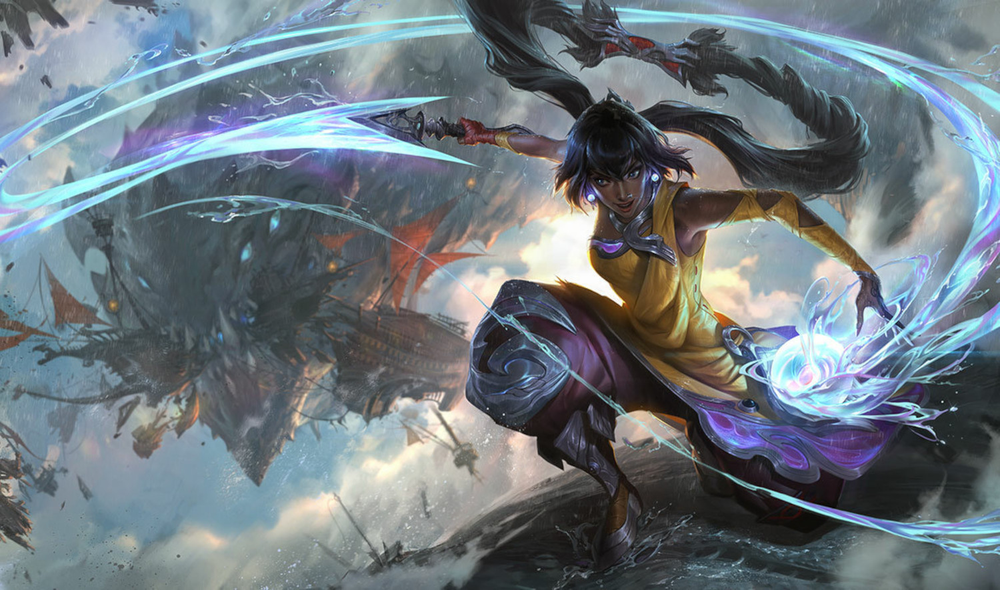
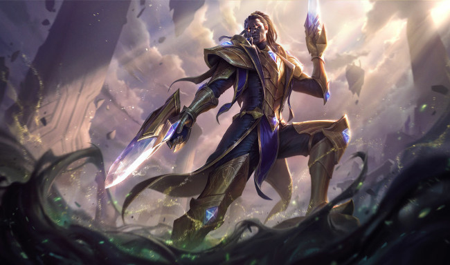

Nesse site irei hospedar tudo que aprendi até o momento do curso
Emojis e simbolos
Vamos começar por: Como colocar emojis e simbolos no site
irei inserir alguns simbolos no proximo paragrafo:
Esse aqui é o simbolo do Dolar $ esse é do euro €, esse do cent ¢, esse da libra £
agora irei colocar alguns emojis
esse são meus emojis favoritos e amo usar ele no meu dia-a-dia
😶 😢
Agora chegou a parte das imagens
irei inserir algumas imagens nos proximos paragrafos
Nilah
Nilah, uma guerreira asceta de uma terra distante, busca os oponentes mais gigantescos e mortais do mundo para poder desafiá-los e destruí-los. Tendo conquistado seu poder após enfrentar o demônio da alegria, que estava aprisionado há muito tempo, ela não sente outra emoção senão um júbilo incessante — um preço pequeno a ser pago pela força vasta que possui agora. Canalizando a forma líquida do demônio numa lâmina de poder inigualável, a combatente desafia antigas ameaças esquecidas no tempo
Lucian
Lucian, um Sentinela da Luz, é um caçador de espíritos imortais que usa suas pistolas relicárias para persegui-los implacavelmente e, por fim, aniquilá-los. Após o assassinato de sua esposa pelas mãos do espectro Thresh, Lucian embarcou em uma jornada de vingança. Mas mesmo com a volta de sua amada ao reino dos vivos, sua ira permanece inalterada. Impiedoso e obstinado, Lucian não hesitará em proteger os vivos contra os horrores da Névoa Negra.
Agora irei colocar falar sobre hierarquia de titulos
Como exemplo irei colocar algumas coisas sobres personagens do league of legends
Fiora

A duelista mais temida de toda Valoran, Fiora é renomada tanto por suas maneiras bruscas e perspicácia quanto pela velocidade de sua rapieira de aço. Nascida na Casa Laurent no reino de Demacia, Fiora tomou o controle da família de seu pai no rastro de um escândalo que quase os destruiu. A reputação da Casa Laurent foi manchada, mas Fiora não mede esforços para restaurar a honra de sua família e devolvê-los a seu lugar de direito entre os melhores de Demacia.
Renata glasc

Renata Glasc emergiu das cinzas de seu antigo lar com nada além da pesquisa alquímica de seus pais e seu próprio nome. Décadas se passaram, e ela se tornou a Baronesa da Química mais rica de Zaun, uma magnata que consolidou seu poder ligando os interesses dos outros aos seus próprios. Trabalhe com ela e receberá uma recompensa imensurável. Trabalhe contra ela e viva para se arrepender. Mas, uma hora ou outra, todos acabam ao lado dela.